Definición formal de límite y funciones no continuas
Definición formal de límite y funciones no continuas
 Definición formal de límite y funciones no continuas
Definición formal de límite y funciones no continuas
Que el alumno comprenda los distintos comportamientos que puede tener una función no continua a partir del concepto y de la definición formal del límite de una función.
Se presenta un video de uso público que trata sobre la noción intuitiva de la definición formal de límite para una funicón con una discontinuidad removible.
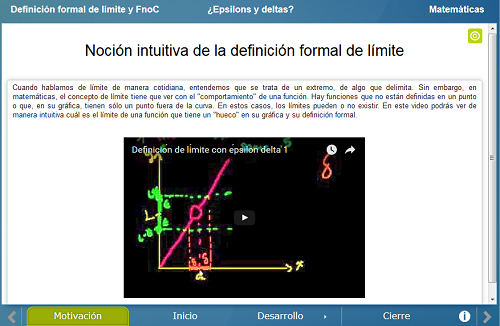
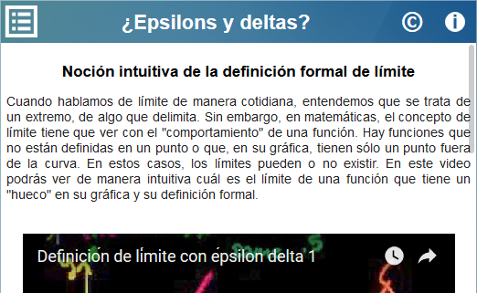
Se enuncian la definición formal de límite para una función en general y la definición de función contínua, para después dar algunos ejemplos de los diferentes casos de funciones discontinuas a partir de que no se cumpla alguna de las hipótesis en la definición de función continua. Con estos ejemplos como motivación se enuncia la definición de límites laterales.
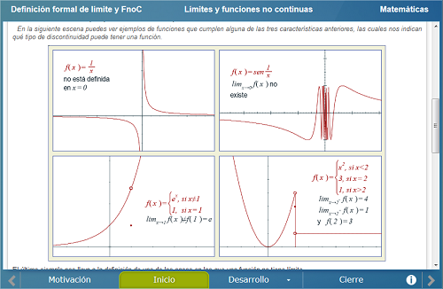
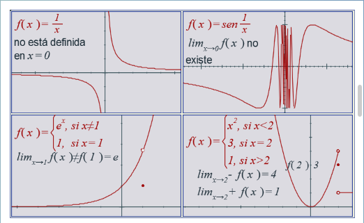
Consta de tres escenas. En la primera se muestra una función con una discontinuidad removible y se calcula el límite en el valor de x donde se da dicha discontinuidad. Este límite existe, pues la función está definida en dicho valor.
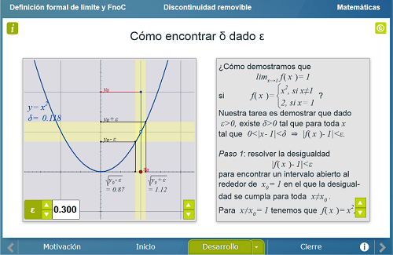
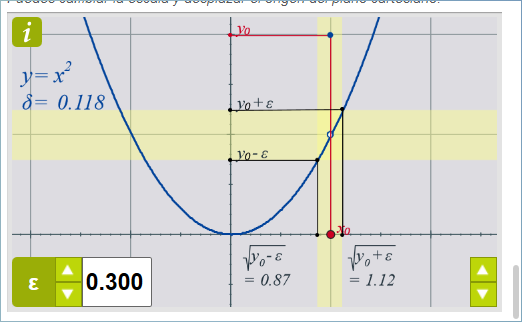
En la segunda escena se muestran dos ejemplos de funciones en las que hay una discontinuidad de salto en un valor específico de x donde la función no está definida y por lo tanto el límite no existe. Se da una metodología para demostrar cuándo un cierto valor no es el límite de una función.
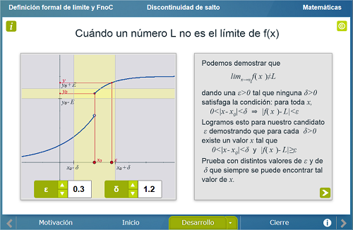
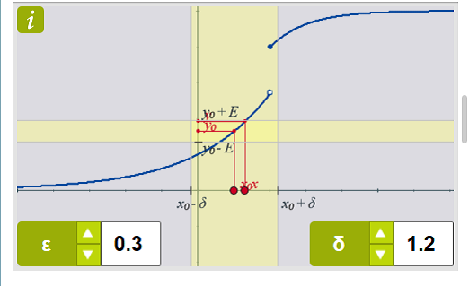
En la tercera y última escena de esta sección, se dan tres ejemplos concretos de funciones discontinuas. En los tres ejemplos la función no está definida en un valor de x y los dos últimos ejemplos dan lugar a la definición de límites infinitos.
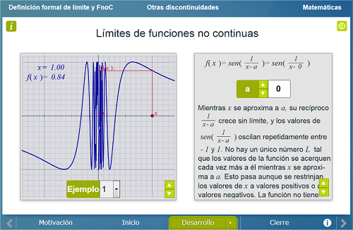
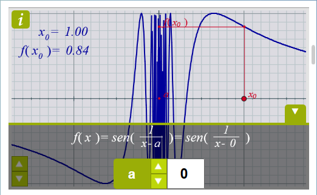
Finalmente se hace una síntesis de la unidad y se define y se ilustra a través de la gráfica de una función discontinua la definición formal de límites infinitos.
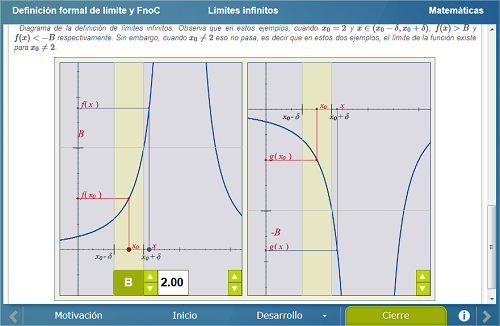
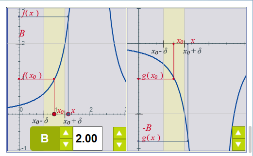
| Diseño del contenido | Elsa Sirenia Vega Camacho |
| Diseño funcional | Elsa Sirenia Vega Camacho |
| Programación | Elsa Sirenia Vega Camacho |
| Asesoría de programación | Leticia Montserrat Vargas Rocha |
| Diseño gráfico | Ricardo López Gómez |
| Coordinación | Leticia Montserrat Vargas Rocha |
| Diseño del contenido | Elsa Sirenia Vega Camacho |
| Diseño funcional | Elsa Sirenia Vega Camacho |
| Programación | Elsa Sirenia Vega Camacho |
| Asesoría de programación | Leticia Montserrat Vargas Rocha |
| Diseño gráfico | Francisco Varela Fuentes |
| Coordinación | Leticia Montserrat Vargas Rocha |
| Desarrollo del contenedor | Oscar Escamilla González |
Los contenidos de esta unidad didáctica interactiva están bajo una licencia Creative Commons Reconocimiento-NoComercial-CompartirIgual.
La unidad didáctica fue creada con Arquímedes, una herramienta de código abierto.
La unidad didáctica contiene escenas elaboradas con Descartes, una herramienta de código abierto.
LITE - UnADM 2014